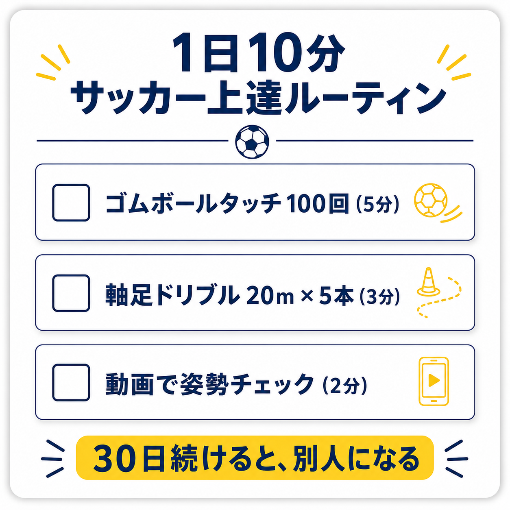

📋 PREVIEWX投稿1（スレッド形式）｜鈴木さん確認用
ANDANTE
運動音痴は治らない、って誰が決めたんですか？
20年やってもど下手だった僕の生徒が、1年3ヶ月で別人になりました。
具体的に変えたのは、3つだけ↓
💬 0
🔁 0
♡ 0
📊 0
ANDANTE
ボールを変える
普通のサッカーボールでいくら練習しても、脳は『いつもの動き』を再生するだけです。
『ゴムボール』に変えると、予測できない動きをするので、脳が『新しい動き』を試行錯誤し始めます。
これが神経科学で証明されてる『脳の学習スイッチ』。
そのまま使えるアイテム↓
モルテン『リフティングボール LBN15』
Amazonで¥2,725。

💬 0
🔁 0
♡ 0
📊 0
ANDANTE
軸足を意識する
普通はドリブルで『蹴り足』を意識しますが、これだと力が伝わりません。
ハサミを短く持つと切れない、長く持つと切れる、と同じ。
力点（軸足）と作用点（ボール）の距離が遠いほど、力が伝わります。
そのまま使える意識↓
ドリブル中、軸足の真上に体重をしっかり乗せる。
最初は違和感ありますが、3週間で身体が覚えます。

💬 0
🔁 0
♡ 0
📊 0
ANDANTE
1日10分だけ続ける
才能の正体は『正しい動きを、無意識レベルまで反復した結果』です。
逆に言うと、反復さえあれば、誰でも才能になれる。
ただし条件は『続けられること』。
1日30分は続かない、1日10分なら続きます。
そのまま使えるルーティン↓
毎朝の歯磨き後、5分だけ。
『ゴムボールでタッチ100回 + 軸足意識のドリブル20m × 5本』
これだけ。

💬 0
🔁 0
♡ 0
📊 0